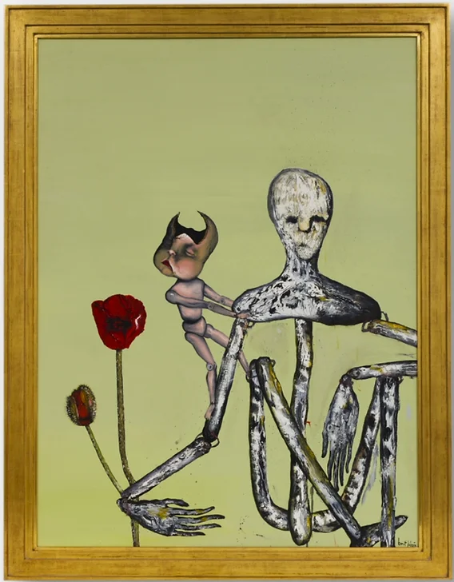
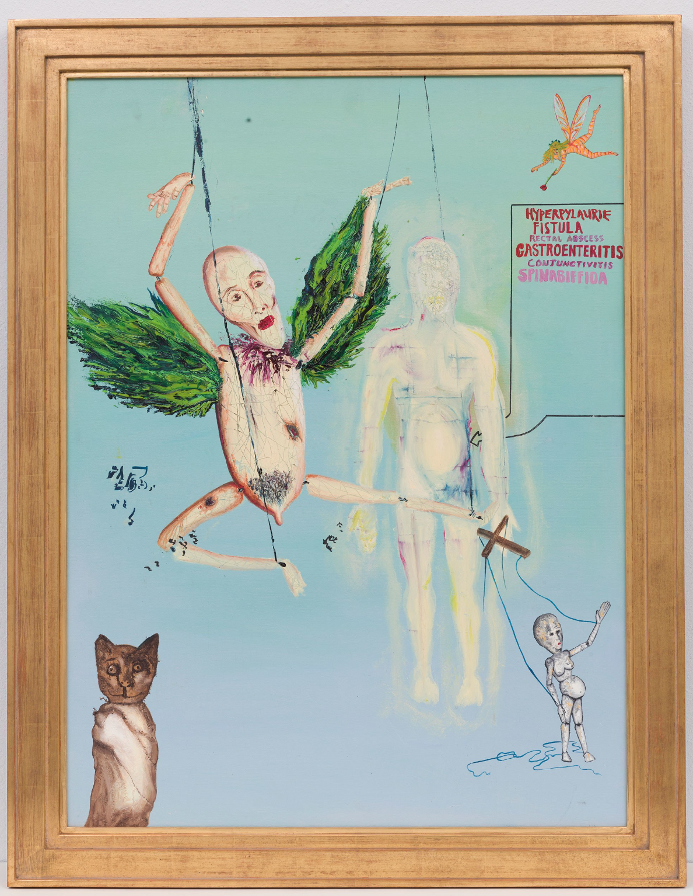
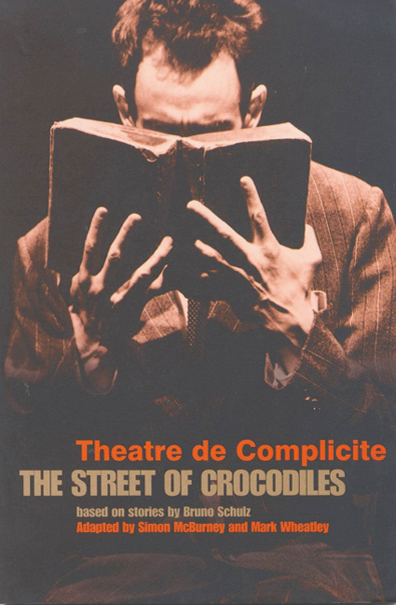
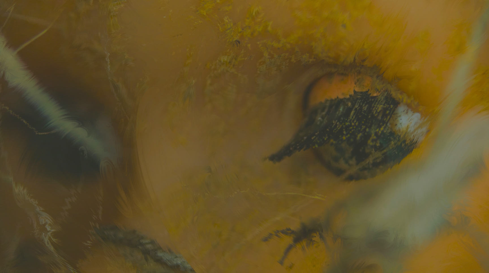
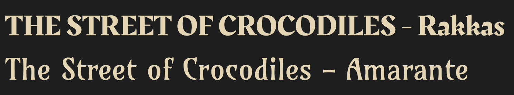
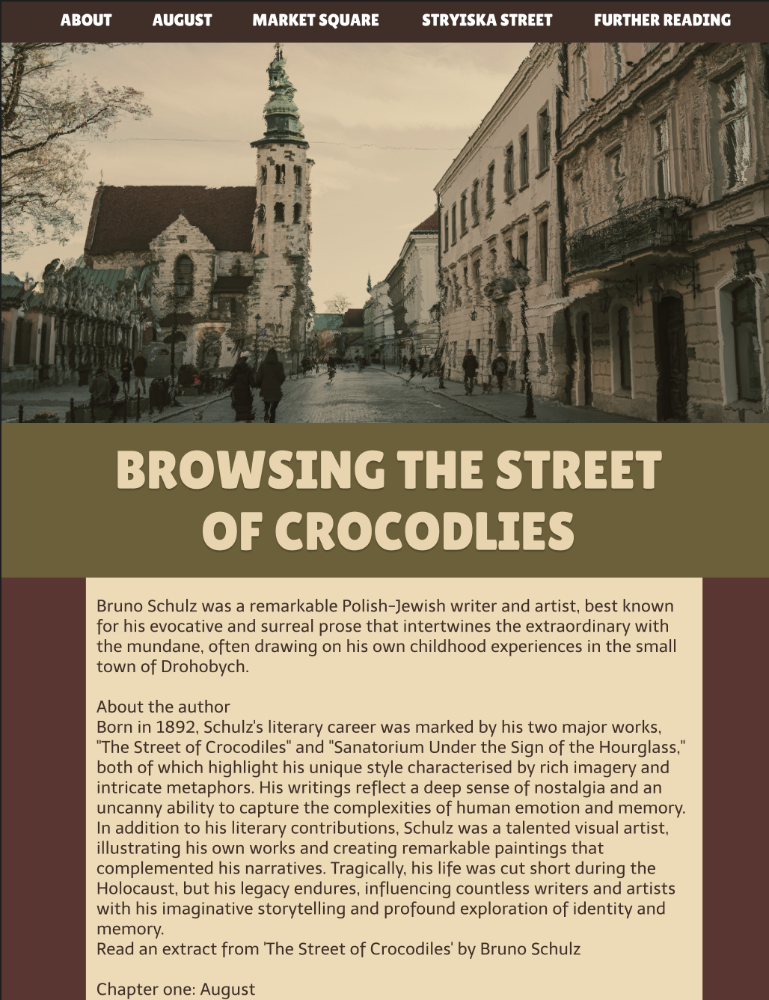
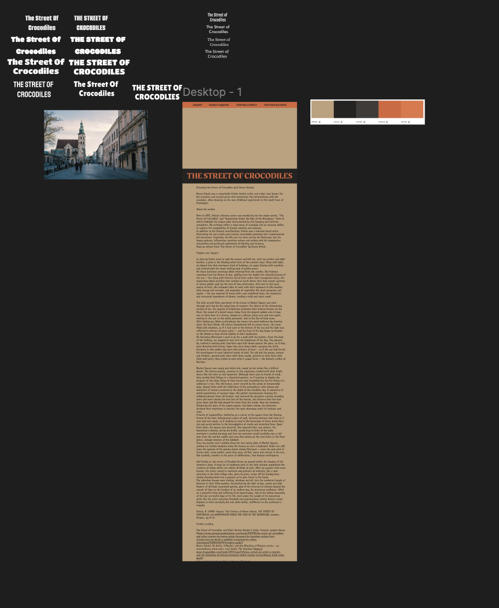
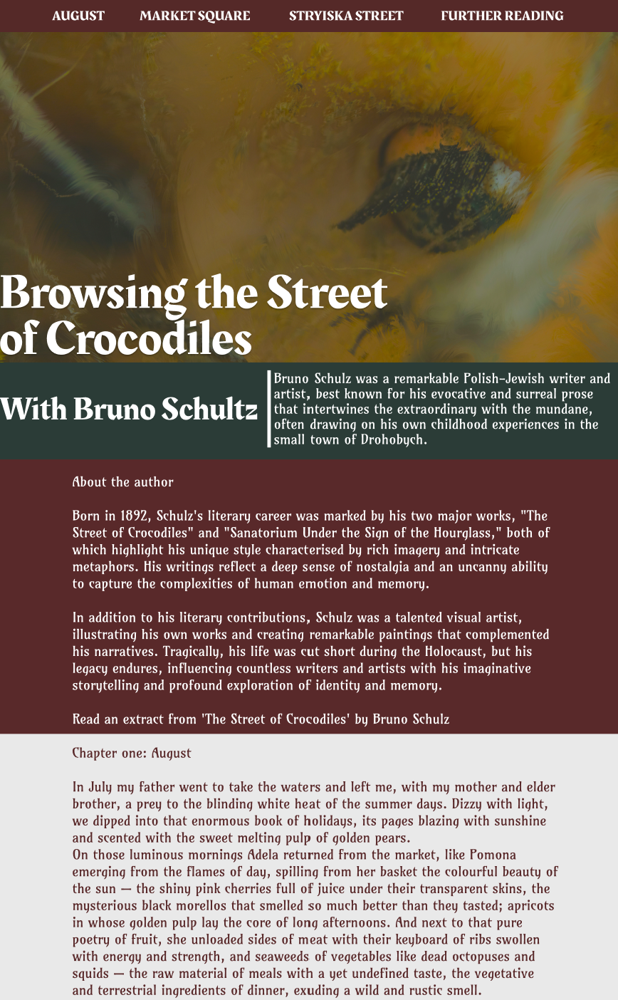

PROJECT SPECIFICATIONS
-
The time it took for this project was 5 - 6 Weeks.
-
Software used for this project: Figma and Visual Studio Code
-
This was a coding project, I had to create a website.
The Brief
The project was to create a responsive webpage for an excerpt from The Street of Crocodiles. I set up a GitHub repository called crocodiles, built a clear typographic structure with semantic HTML, and ensured the layout adapted across devices. The design featured copyright-free imagery and a colour palette that captured the surreal tone of Bruno Schulz’s work.
RESEARCH
I explored the story’s surrealism and the Quay Brothers’ film adaptation, whose stop-motion aesthetic inspired the eerie tone. I studied book covers for typography and palette ideas, then researched 1930s art movements—Social Realism, Art Deco, Abstract, and Neo-Romanticism. I chose Neo-Romanticism for its moody atmosphere. I also learned that Kurt Cobain was influenced by the Quay Brothers, which inspired a subtle grunge quality in my design.



IDEATION
I sketched several layouts, blending influences rather than copying any single source. I built colour palettes from book covers and film stills, favouring muted, painterly tones. I processed imagery to resemble Neo-Romantic oil paintings, reinforcing the site’s dark and dreamlike atmosphere.

IDENTITY
Typography drew from medieval and underground references. Headings are bold and slightly distressed, echoing Schulz’s psychological and surreal writing while remaining accessible and readable on all screens.

MOCKUPS & BUILD
In Figma, I refined drafts to feel darker and more atmospheric. I then coded the site using HTML and CSS, focusing on spacing, backgrounds, and responsive scaling. DevTools helped me fix overflow and alignment issues; a padding error turned out to be the main culprit. I used media queries for various screen sizes and redesigned the navigation into a mobile sidebar with a small JavaScript snippet. Testing across devices ensured consistent readability.



CRITIQUE & OUTCOME
Feedback praised the tone, imagery, and consistency. I refined section padding, adjusted header styling, and made the “Read an extract” area more prominent. The finished site balances gothic, grunge, and Neo-Romantic influences, with minor quirks like a thin red line under the hero image. Overall, it strengthened my skills in semantic coding, responsive design, and visual storytelling.
Live link: unwisegenius.github.io/crocodiles/crocodiles.html